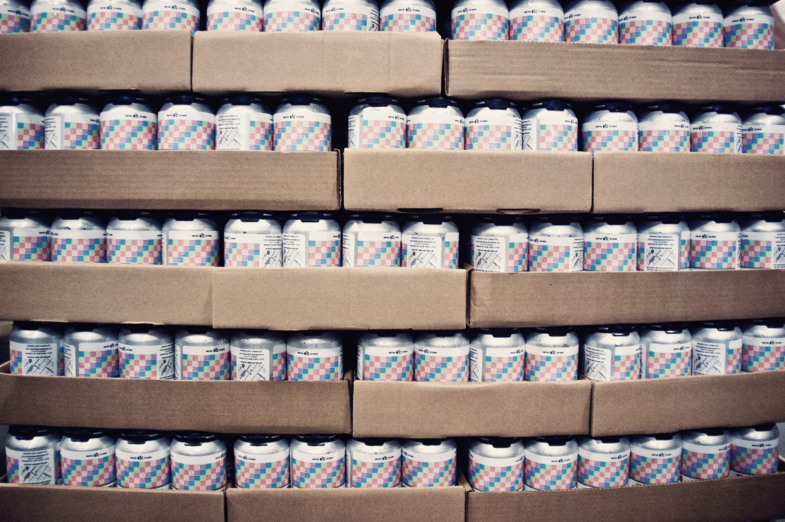

Five Boroughs Brewing Co. Makes craft beer that brings New York City together.
Are you over 21?
YES
NO
You must be of legal drinking age to join us. Sorry, kids.

There’s one question we get asked a lot: Which of your five icons stands for which borough? The answer probably won’t be one you expect. All of the icons are for all of the boroughs. Let us explain.
As you might imagine, it’s not the easiest task to come up with a visual identity for a brand meant to resonate with all New Yorkers. How do you distill this city, bursting with the widest range of opportunities in one place, into a single image? How do you represent its residents, some of the most diverse in the entire world, with just one marker? We’ll cut right to the chase: You can’t. While developing the branding for Five Boroughs, we tried a lot of things that felt like they would be very New York, but we often ended up feeling more like we were creating a new sports team than a beer company.
So, our team went back to square one. Instead of going straight to how we wanted our product to look, we thought about what we wanted our product to do. We’re a team that wants people to use the beer we brew as a catalyst to explore New York City. Whether that’s heading into a bar you’ve never been to, taking the train to a new stop, or visiting a borough you hardly frequent—we want Five Boroughs to be the beer that kickstarts your adventures in the city.
That’s how we got to the five icons you see around everything Five Boroughs. They stand not for the boroughs themselves, but for the five senses you use to experience them. Sure, this city can sometimes be sensory overload, but we think that you have to sometimes lean into that experience and engage all of those senses instead of shying away—and it helps to have a great craft beer in hand.
When we see the icons on our glassware, kegs, and tap handles, they remind us that New York City should always be an adventure. And craft beer is an adventure, too. When combined, and all of the senses are heightened, we know the possibilities for fun, connection, and adventure are absolutely limitless.
So, about that frequently asked question? Five boroughs, five senses—it’s no coincidence to us.